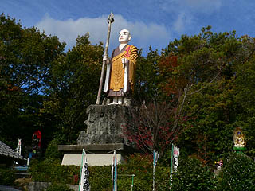
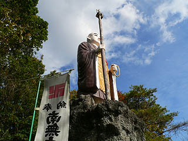
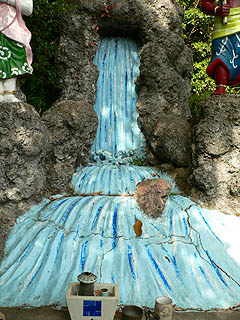
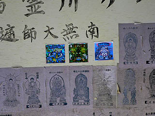

厄除弘法大師/愛知県尾張旭市
大弘法5番勝負一番目は尾張旭市にある厄除弘法大師。
愛宕山という小高い丘の上のやや開けた場所に大弘法が立っている。
デ〜ン。
|

|

|
尾張旭の街を見守るかのように立つ弘法さんは台座の高さも相まってその身長以上に大きく見える。
一説には名鉄が観光用に建てたとか。
台座の部分に登ってみる。岩山風にあしらわれたコンクリの台座には寄進者などの名前が刻まれていた。
おっ、制作者の名前を発見！

|

|
ゴッドファーザーオブ☆コンクリ仏の浅野祥雲師父ではないか！
いわれてみればどこかアンニュイな表情、垂れ目がちなお顔に浅野作品の作風が感じられる・・・ような気がしてくる。
昭和6年に建立されたこの大師様、昭和30年に塗り直しをしている。
と、台座に記されていたがその後も塗り直しをしているのだろう。
青空にパキっとその姿を際立たせていた。まるでビルマ仏のようだ。
大師像の右手には不動明王とその眷属が。
触ると火傷しそうな色使いのファイヤーをバックに従えた不動様、厳つい中にもどこか「抜けた感」が漂う。
これもまた浅野作品の風格というものであろうか。
右の不思議な髪型をした赤い人は何とか童子なのだろうが、左の人は何だろう、一般人か？
足元にはコンクリ滝が流れている。

大師像の正面には拝殿があってお堂の中から大師サマを拝する事ができる。
堂内に掲げられた厄除弘法大師の額は虫食いで穴だらけになっていて、何だか機銃掃射を受けたみたいでチョット悲しい。
堂内にあった四国霊場巡礼記念のスタンプ帳。

勉強不足なのでカラースキャナ黄帝とか金ブン怒鬼とか御神籤仙人という札所の本尊は知りませんでした・・・
きっとレアなんだと思います。
愛知大弘法巡り
厄除弘法大師→良福寺大弘法→御花弘法大師→勝川大弘法→春日井駅前弘法
珍寺大道場 HOME